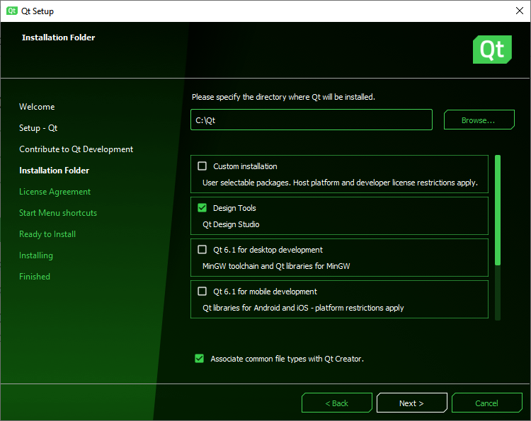
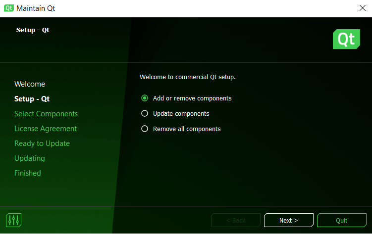

Get and Install Qt
You can get Qt, its modules and tools via Qt Online Installer or Qt Maintenance Tool.
Via Qt Online Installer you can do new installations. Qt Maintenance Tool is included in each Qt installation and with it you can update your Qt installation for example by adding and removing components.
You can use Qt Online Installer and Qt Maintenance Tool via a graphical user interface or a command line interface. The command line interface enables installing and uninstalling without any user interaction, that is, unattended usage.
Using Qt Online Installer
You can download Qt Online Installer via Qt Account as follows:
- Select Downloads
- Download Qt Online Installer for your host: Linux, macOS, or Windows
See Get and Install Qt with Qt Online Installer for more information about how to use Qt Online Installer.
Get and Install Qt with Command Line Interface describes how you can use Qt Online Installer with the command line interface.

Using Qt Maintenance Tool
Once Qt is installed, you can use Qt Maintenance Tool under <install_dir> to add components and to update or remove installed components. Qt Maintenance Tool is included in each Qt installation.
For more information about how to use Qt Maintenance Tool with the command line interface, see Get and Install Qt with Command Line Interface.
